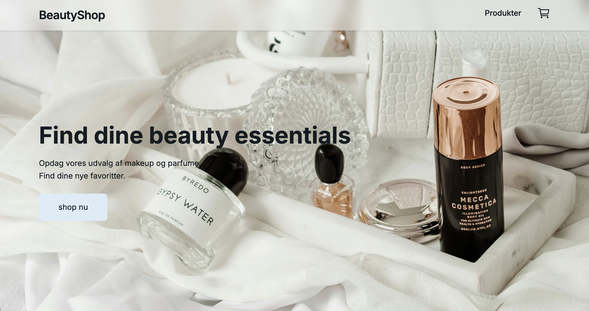

01
Next.js · React · JavaScript · CSS
BeautyShop – Simple Webshop

En webshop udviklet som et gruppeprojekt på 3. semester. Vi har arbejdet med at hente produkter fra DummyJSON API, vise produkter og skabe en brugervenlig shoppingoplevelse. Projektet har givet mig praktisk erfaring med React, Next.js, komponenter og API-integration.